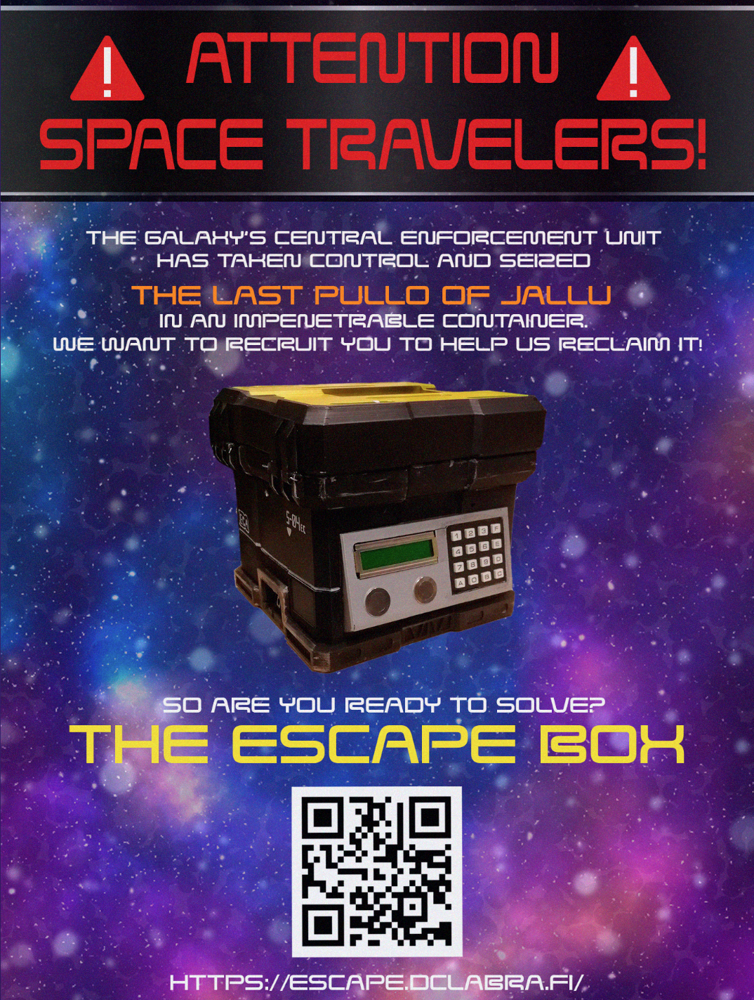
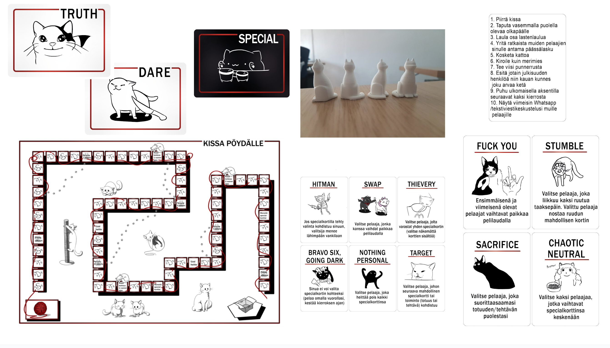
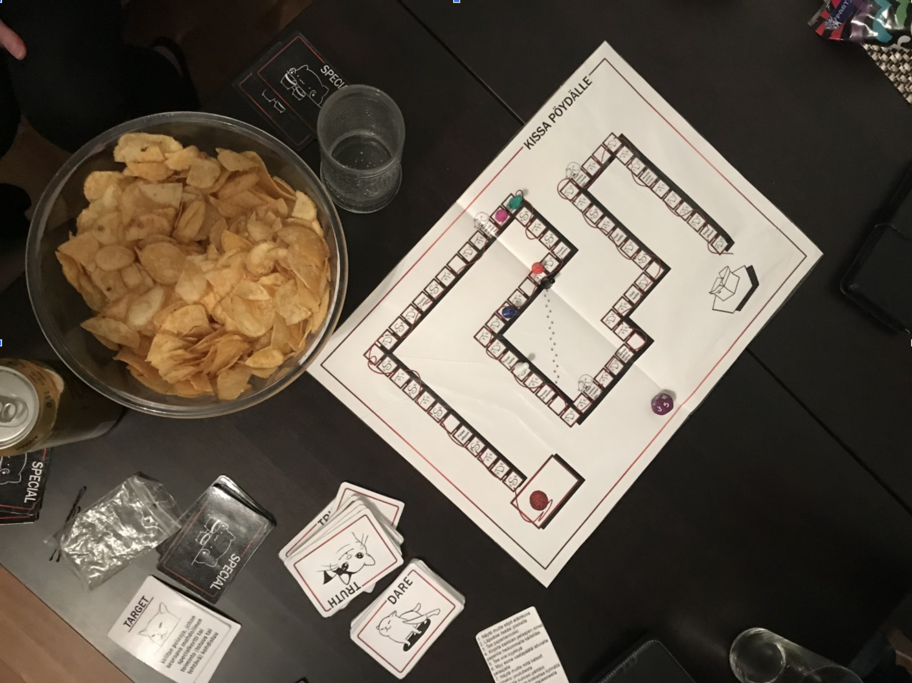

School projects
I graduated from Kajaanin Ammattikorkeakoulu in 2023 as a BBA in information technology. I specliazed in game development and game production. We had multiple game projects during our studies with a new team each project, but in all of them I was the producer. I did pitching, scheduling and held scrum meetings, retros, 1-on-1's and did overall project and team management. I often also did some designing, graphics and trailers for the games and scripted marketing programmes. Here are some of the projects I worked on as a student.
Eggspress Delivery 2020
Eggspress Delivery was a project made for a 3D game course. It was inspired by Fingersoft's Hill Climb Racing, but in addition to car racing you have to balance an egg on top your car. I worked as a producer on this project, responsible for social media and marketing materials, like the trailer, and conducted game testing.
You can download and try the game with the APK from here!
Escape Room Box 2021
The Escape Room Box is a game for a technology project course which joined the game students with the data center and engineering students. The goal was to create something that combines something of our respective fields. The Escape Room Box consists of three parts, the website, the box and the game app on the website., and you need to solve puzzles to get the box open. There is a timer on the box that records the time from the beginning to the moment that the players get the box open, sends it to a database, which showcases the top 10 times on the website’s leaderboards.
The game app and the box are intertwined together. There is no data moving between the two, but to solve some puzzles on the box you need information from the puzzles of the game app and vice versa, so to solve the whole thing you need to complete all the puzzles in a certain order both from the app and the box. Here you can see pictures of the home page of the website, the game app page and some pictures of the box. We tried to incorporate many different kinds of puzzles, for example levers, visual and logical puzzles and a light sensor. In total there are six different puzzles.
I worked as a producer and a puzzle designer on this project.


Nothing To Fear 2020
Nothing To Fear was a project for a 2D game course. My team made a puzzle horror game, where you had to solve the puzzle to get out of the mansion without getting caught by the monster that is locked in with you. I was the producer on this project, but I also worked on some of the art, like the marketing graphics, the monster and character animation, and the trailer.
You can find the game on itch.io!
Couch Control 2021
Couch Control was made for Triple Game Jam with students from Lapin Ammattikorkeakoulu and the Japanese Trident College. It's a simon says type of game, where the player has to memorize the order the buttons on the remote are highlighted and press them in the correct order. I worked as a producer on this project, handling the communication between the schools. I also did most of the game design and a few art pieces, like the commander seen on the TV screen. The theme of the jam was "remote".
Kissa Pöydälle 2020
Kissa Pöydälle was one of the first game projects I worked on in University and it holds a special place in my heart. The assignment was to make a board game, and our team decided to create a cat themed truth or dare party game. The player throws a dice and moves along the board and takes a card according to the tile they land on. If they take the truth or dare card, they throw the dice again to determine which task they perform on the card. The bigger the number, the harder the task. If the player succesfully completes a task numbered 5 or above, they get to draw a special card. The special cards can be used to mess with other players or protect yourself. I worked as a producer on this project, but I did most of the cat art that is on the cards and designed the special card powers.

